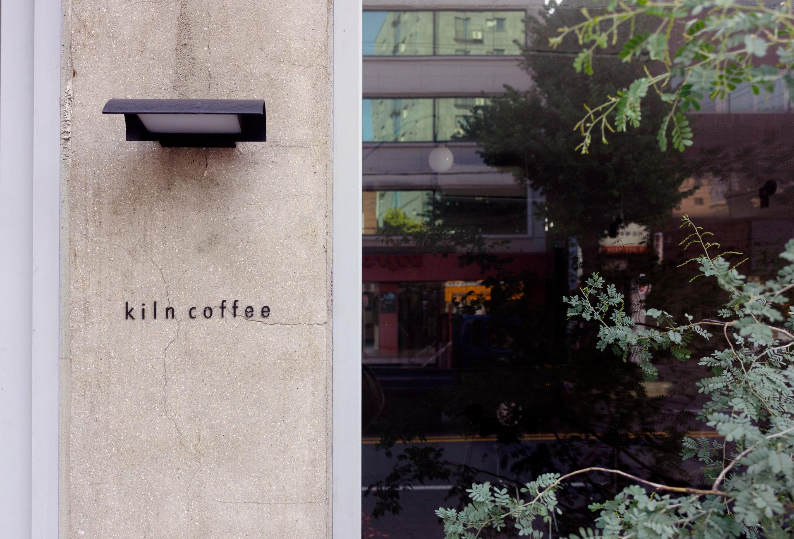
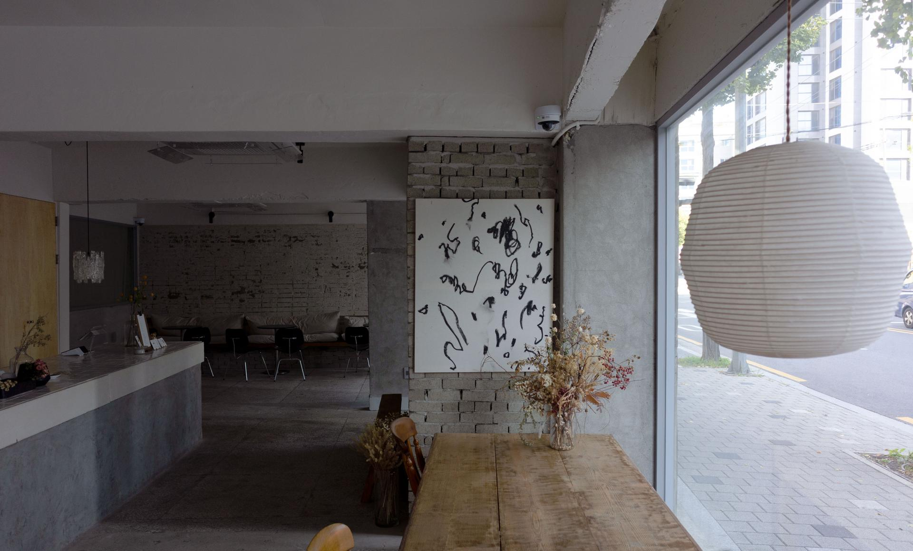
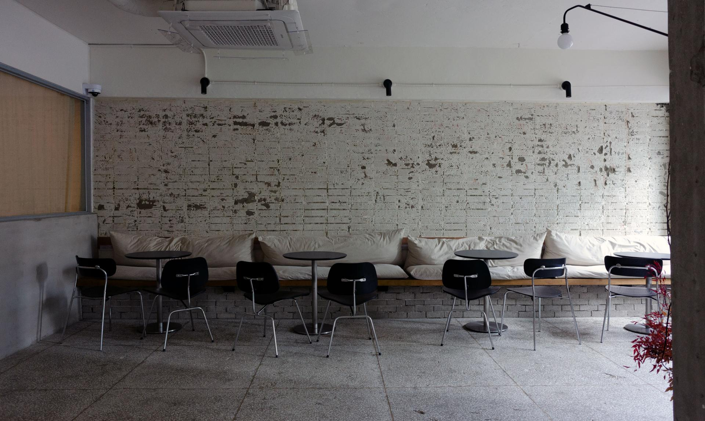
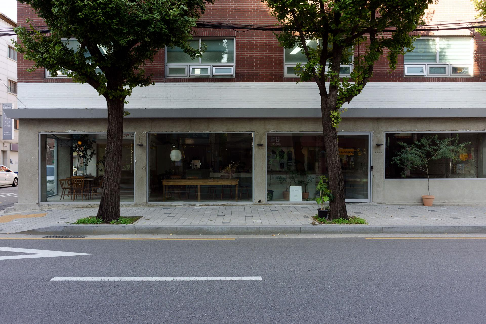

← All projectsProject 10 / 2023
2023
Kiln Coffee
키른 커피(kiln coffee)
Floor : 148.7㎡(45PY)
Client : kiln_seoul
Site : 서울특별시 송파구 마천로 167, 1F
Date : 2023.4
Interior design : thatched__studio
Construction : thatched__studio
Branding design : thegardenest
Wood furniture : jungchan.hwang
Styling : kiln_seoul
art work : jieunikim



